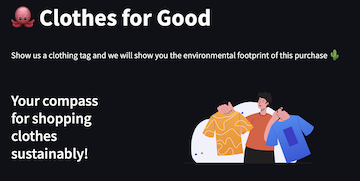

The web application is built to return JSON payload containing the news that are relevant to
what users want to read. Overall, it is developed using AWS cloud 9 as the environment and
queries from the Atlantic news website. The microservice was containerized in AWS Elastic
Container Registry (ECR) and pushed to production using AppRunner and FastAPI. Continuous
Integration is enacted through Github Actions and Continuous Deployment is performed through
configuring Build Server to deploy changes on build using AWS ECR and Code Build.
The project aims to design an interactive queries function of SQL by connecting the database from
Azure to evaluate the KPI performance.
Local Database (DB) connection to Azure is executed by using Azure Database for MySQL single
server(use Migration Wizard). In codespace, we can access Database which is exactly the same as
the Azure database, and with this, I created a Datawarehouse and loaded all the needed data from
the DB. Interactive queries can be perfromed in the codespace with the SQL interface. The goal
of this project is to let KPI evaluation be more efficient and updatable by connecting to a
cloud Database.

This HackDuke project aims to build an innovative and intuitive web app for sustainability
fashion, which achieved a third-place in the environmental track. An image-to-text neural
network model, natural language processing were adopted to help uses identify the estimate
hidden electricity, water, and CO2 costs of a piece of clothing by simply scanning the clothing
label. The web app allows users to conceptualize the environmental impact of their clothing
purchases, and stay informed when making purchase decisions. The app was deployed on Heroku and
is currently paused due to high costs of running it.
Using 400M+ rows of data, the project examines the effectiveness of interventions in the State’s
Opioids policies in lowering the volume of opioids prescription and the rate of drug overdose
mortality. Pre-Post analysis is first conducted to examine the difference in opioids
prescription and mortality rate between pre-policy and post-policy era. However, even if the
trend is different, we cannot be sure the difference is caused by the policy and not other
factors. Thus, differnece-in-difference analysis is conducted. This method allows us to compare
the change in opioids prescription and mortality rate in the state where the policy was enacted,
with a hypothetical parallel universe where the policy was not enacted. Overall, the project
provides evidence-based recommendations on the effectiveness of the State's Opioids policies,
and to inform future policy decisions on opioid use and abuse.
Using 400M+ rows of data, the project examines the effectiveness of interventions in the State’s
Opioids policies in lowering the volume of opioids prescription and the rate of drug overdose
mortality. Pre-Post analysis is first conducted to examine the difference in opioids
prescription and mortality rate between pre-policy and post-policy era. However, even if the
trend is different, we cannot be sure the difference is caused by the policy and not other
factors. Thus, differnece-in-difference analysis is conducted. This method allows us to compare
the change in opioids prescription and mortality rate in the state where the policy was enacted,
with a hypothetical parallel universe where the policy was not enacted. Overall, the project
provides evidence-based recommendations on the effectiveness of the State's Opioids policies,
and to inform future policy decisions on opioid use and abuse.